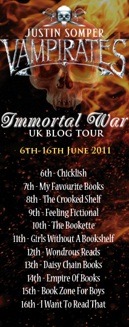
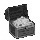

News Of Treasure On The Horizon.
Latest News
For the latest news the best idea is to check out the Upcoming Event Dates, blog page and The Nocturn (http://www.freewebs.com/thenocturn/news.htm)
Vampirates Book 6 The Immortal War
Will be published in the UK on 9 June 2011
Simon & Schuster UK Ltd / ISBN-10: 1416916547 / ISBN-13: 978-1416916543
Will be published in the USA on 2 January 2012
Little, Brown Books for Young Readers / ISBN-10: 0316033243 / ISBN-13: 978-0316033244
To read a selected text from the first two chapters please see http://www.vampirates.co.uk/the-books/samplechapterimmortalwar/

For a signed copy of Immortal war please contact these independent bookshops:Steyning Bookshop, 106 High Street, Steyning, West Sussex, BN44 3RD
Phone: 01903 812062
Victoria Park Books , 174 Victoria Park Road, City of London, Greater London E9 7HD
Phone: 020 8986 1124
Pritchards, 54 Brows Lane, Liverpool, Merseyside L37 4ED
Phone: 01704 875765
Waterstones Oldham, 46/47 The Spindles Centre, GB - Oldham OL1 1HD
Phone: 0843 290 8531
Silverdell Books, 61 Poulton St. Kirkham, Preston, PR4 2AJ
Phone: 01772 683444
Simply Books, 228 Moss Lane, Bramhall, Cheshire, SK7 1BD
Phone: 0161 4391436
Newham Bookshop, 745-747 Barking Road, London E13 9ER
Phone: 020 8552 9993
Blog Tour
Monday 6th June - Chicklish - Extract #1 (http://keris.typepad.com/chicklet/)
Tuesday 7th June - My Favourite Books - An interview with Justin Somper (http://myfavouritebooks.blogspot.com/)
Wednesday 8th June - The Crooked Shelf - The Women of Vampirates (http://thecrookedshelf.blogspot.com/) (SM I think I cannot find any comment about it).
Thursday 9th June - Feeling Fictional - Animal Antics (http://www.feelingfictional.com/)
Friday 10th June - The Bookette - Extract #2 (http://www.thebookette.co.uk/)
Saturday 11th June - Girls Without A Bookshelf - Playlists & The Music of Vampirates (http://withoutabookshelf.blogspot.com/)
Sunday 12th June - Wondrous Reads - 10 Ways to Know You're Obsessed with Vampirates (http://www.wondrousreads.com/)
Monday 13th June - Daisy Chain Books - Ending An Era: Killing Off Vampirates (http://daisychainbookreviews.blogspot.com/)
Tuesday 14th June - Empire of Books - Top ten Vampirates characters ever (http://empire-of-books.blogspot.com/)
Wednesday 15th June - Book Zone For Boys -- Q&A with Justin (http://bookzone4boys.blogspot.com/)
Thursday 16th June - I Want To Read That - WIN! Vampirates swag (http://www.iwanttoreadthat.com/)
The News Treasure Box
Empire Of Night is released.
Tuesday 31st March 2009
The Vampirates US tour visited Philadelphia, Texas. For the highlights see http://www.vampirates.co.uk/vip-page/blog/Howdyguys/
The Vampirates US tour visited Houston. For the highlights see http://www.vampirates.co.uk/vip-page/blog/justinsustourhighlights/
Saturday 4th April to Tuesday 7th April
The Vampirates US tour visited Chicago. For the highlights see http://www.vampirates.co.uk/vip-page/blog/justinsustourhighlights2/
Thursday 9th April
The Vampirates US tour visited Cleveland Highlights. For the highlights see http://www.vampirates.co.uk/vip-page/blog/JustinsUSTourHighlights3/
Friday 13th March 2008
In Dublin, Justin Somper joined Derek Landy (Skulduggery Pleasant) and Sarah Rees Brennan (The Demon’s Lexicon), for the launch of Eason's Darkside promotion. See http://www.tv3.ie/videos.php?video=6657&locID=1.65.74&page=1 for the TV interniw just before hand.
The sword fighting lessons with Justin Somper competition has now closed. If you were one of the lucky ones please send us a mail and tell us all about it in February. If you did not win the opportunity to learn some swasbuckling swordsmanship, alongside Vampirates author, Justin Somper, I have added a page in Cutlass Cate's words.
Justin Somper appeared at the first Bath Festival of Children's Literature. Justin said, "I'm really excited about the new festival. An incredible line-up of authors are taking part and as well as doing my own event, I'm looking forward to seeing some of my own favourites in action.
20th September 2007
On Radio 5 Live, Justin Somper is appeared on the Simon Mayo's Show. He was one of the star guests on the weekly books panel to talk about Blood Captain. It was available to download via http://www.bbc.co.uk/fivelive/programmes/mayo.shtml.
7th September 2007
Tempest Twins Website goes live. For emails of praise please the picture.
Blood Captain is released.
Justin Somper's UK publishers (Simon & Schuster) throw a party to celebrate 'Demons of the Ocean' selling 100,000 copies in the UK and to "reveal" 'Blood Captain' to the world at large.
http://www.freewebs.com/thenocturn/ the Nocturn Website goes live.
Deed Deep is released as part of World Book Day.
Tide Of Terror is released.
http://www.vampirates.co.uk/ the Vampirate website goes live.
Vampirates, Demons Of The Ocean is released.

24th May 2005London Launch Party for Vampirates.